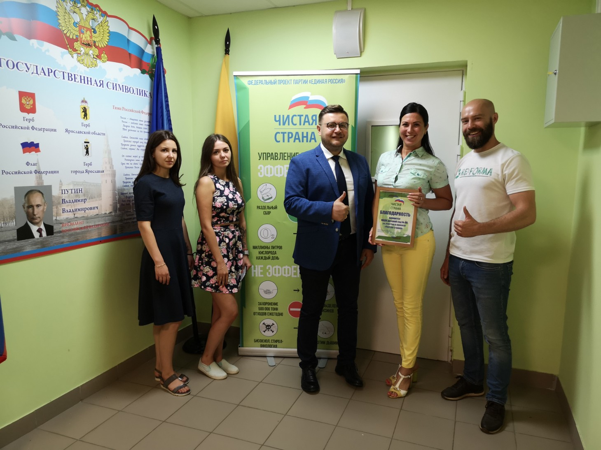

Чистая страна начинается с детства
Экологическое просвещение воспитанников детских садов города Ярославля. За 30 минутное занятие дети узнают что такое экология, как они могут сберечь природу, а также в игровой форме научатся сортировать отходы.
Проект стартовал в мае 2019 года, в общей сложности проведено более 72 мероприятий для дошкольников.

детсад 29

детсад 246

Детские сады получают возможность обменять собранные вторичные ресурсы на подарки от партнёров проекта: саженцы деревьев, альбомы или конструкторы:
подаренные саженцы туи и спереи
Партнеры проекта
-
Департамент образования города Ярославля
-
Департамент охраны окружающей среды и природопользования Ярославской области
-
федеральный экологический проект «Чистая страна» политической партии «Единая Россия»
-
депутат Ярославской областной Думы Фомичёв Роман Юрьевич